Petiole miner (Diptera: Agromyzidae) in Cicuta
| Record no.: | 0148 |
|---|---|
| Feeding guild: | Petiole miner |
| Taxonomy: | Diptera: Agromyzidae: cf. Ophiomyia sp. |
| Stages observed: | trace, larva, puparium, adult |
| Distribution observed: | IA |
| Hosts in Cicuta: | C. bulbifera (bulblet-bearing water hemlock) |
I collected an active mine of this fly in a basal leaf petiole of the host growing in a wetland in mid-June. The egg-laying scar was visible in the epidermis in the distal portion of the petiole, where the mine originated. The larva mined in one direction from the oviposition site for several centimeters, then reversed direction and mined the opposite way. Eventually it ended up in the proximal half of the petiole, where it formed its bright green puparium just under the petiole epidermis, about 60mm from the petiole base. The puparium was formed by June 22 and the small, black adult fly emerged on 6 July.
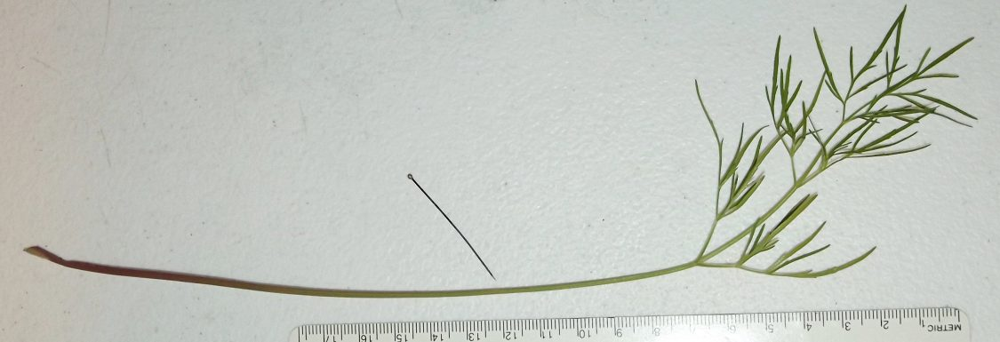
 Prev
Prev


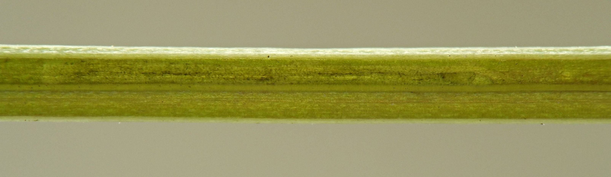

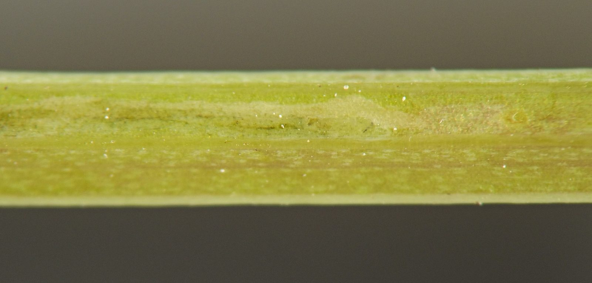

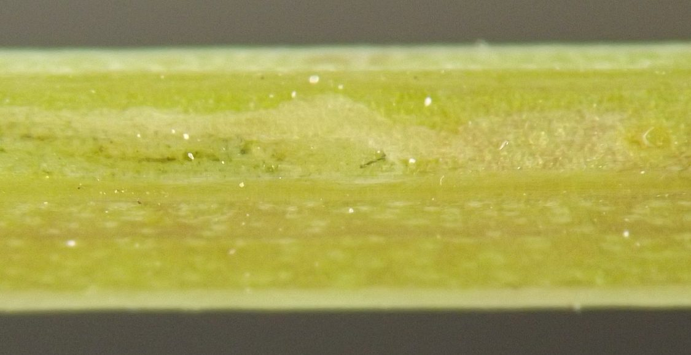

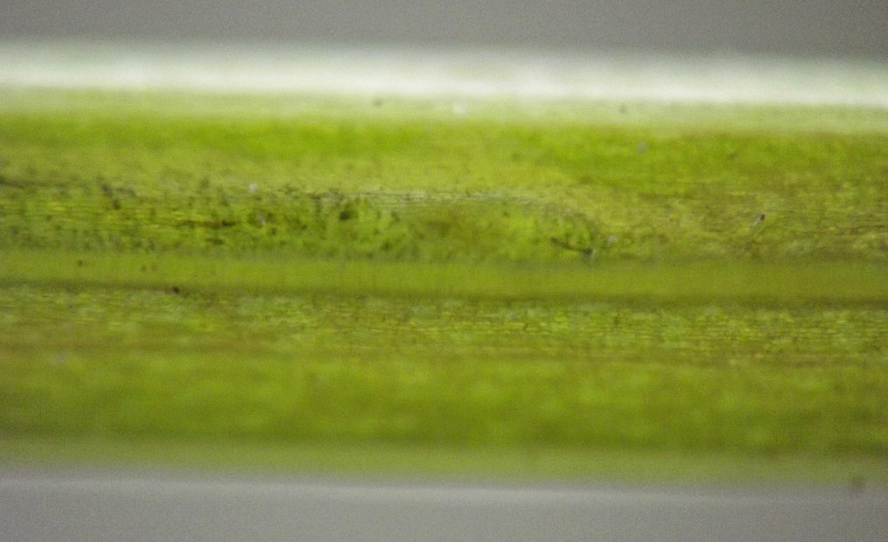

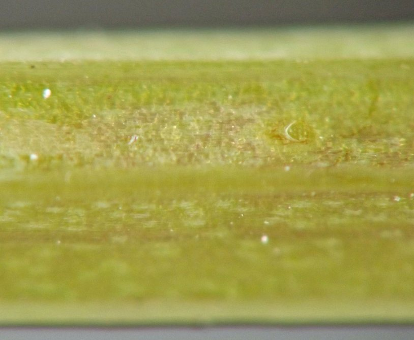

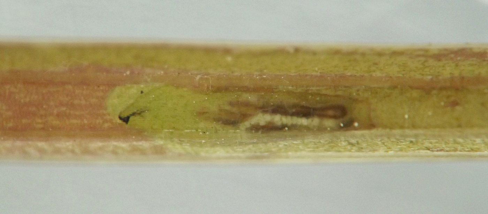

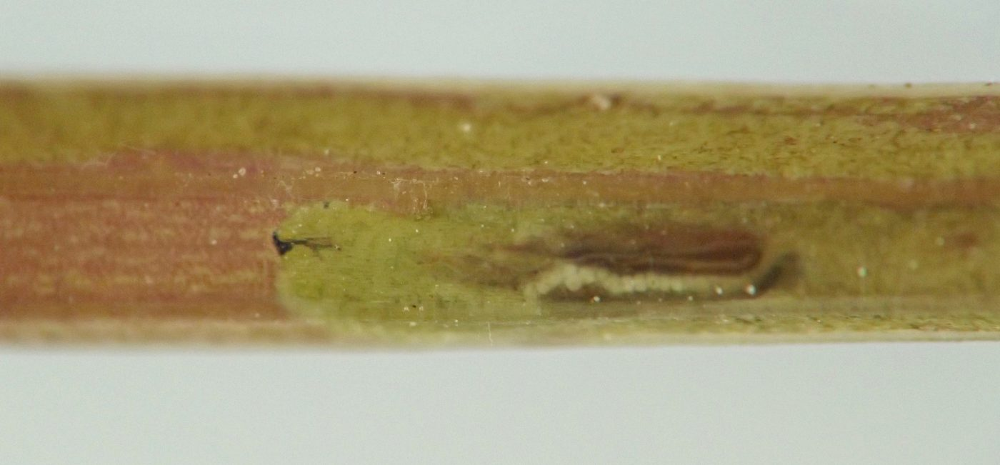

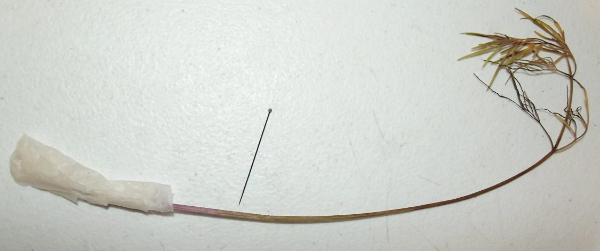

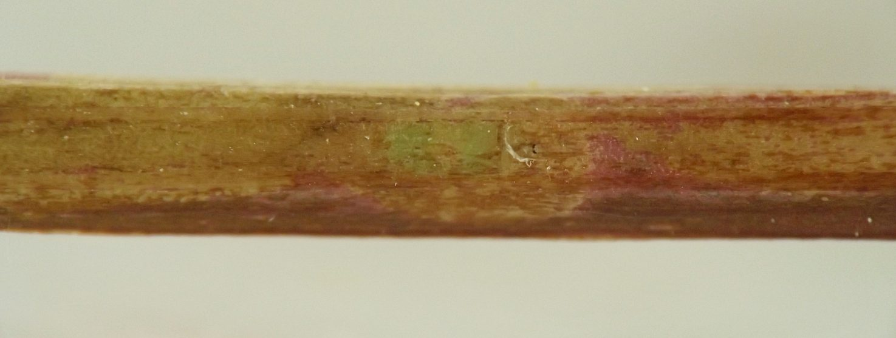

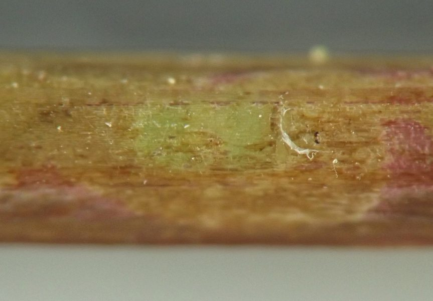

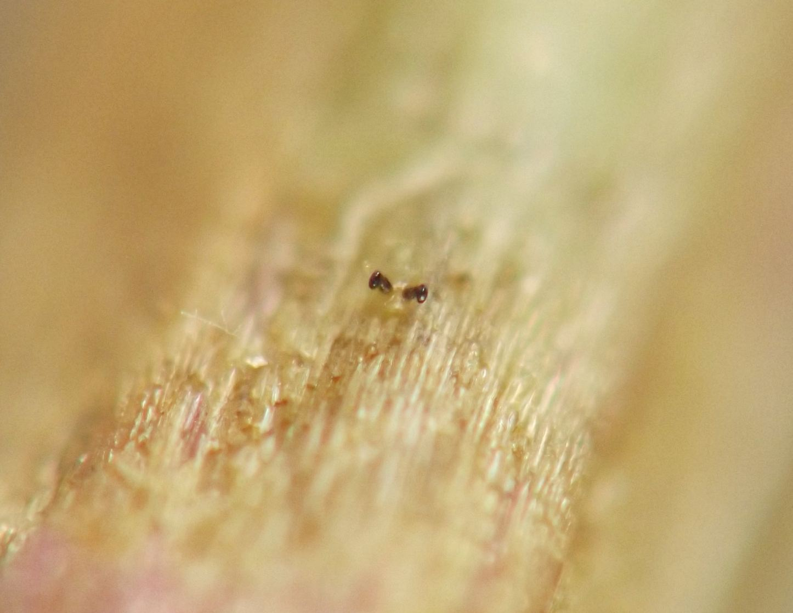

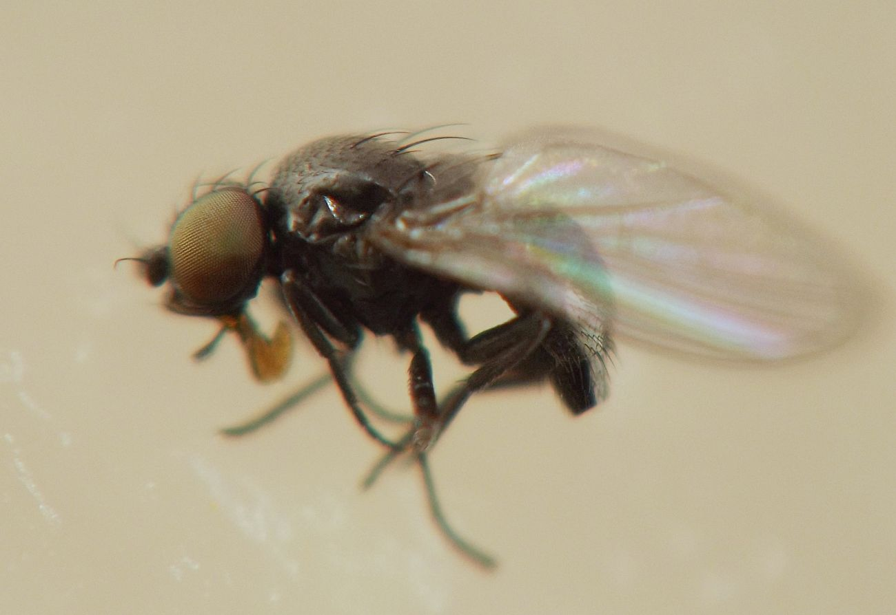

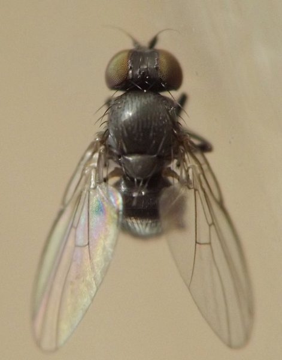

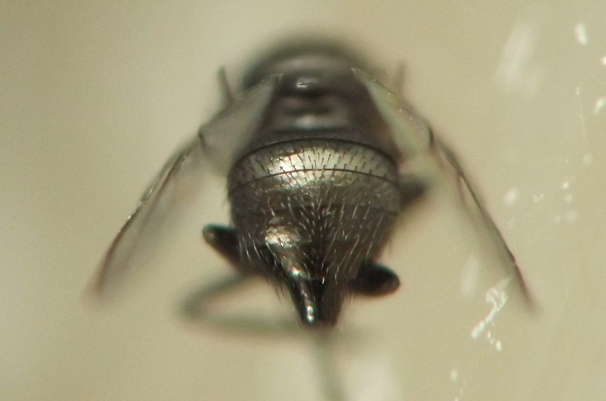
Page created: March 22, 2026. Last update: October 24, 2026